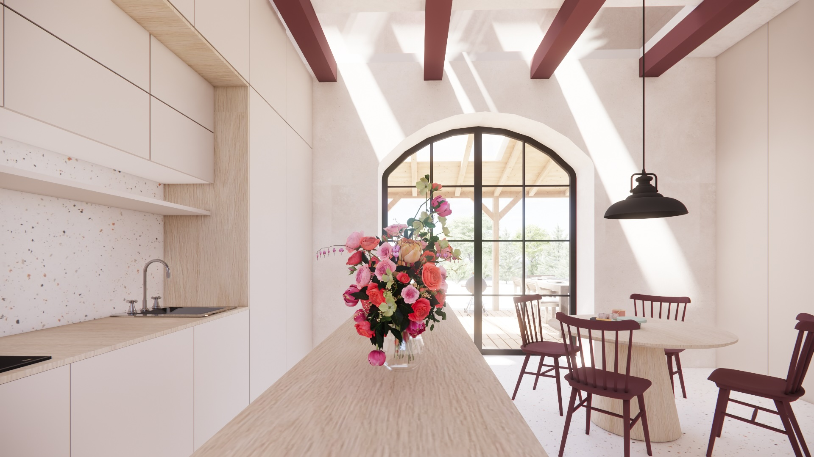

Architektura
Hasičská Zbrojnice
Přestavba historické hasičské zbrojnice na moderní multifunkční prostor se zachováním původního charakteru budovy. Projekt propojuje historické zdivo s čistými současnými intervencemi.
Zobrazit projekt →